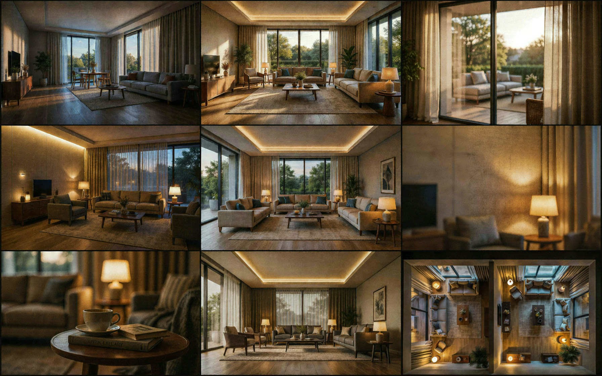
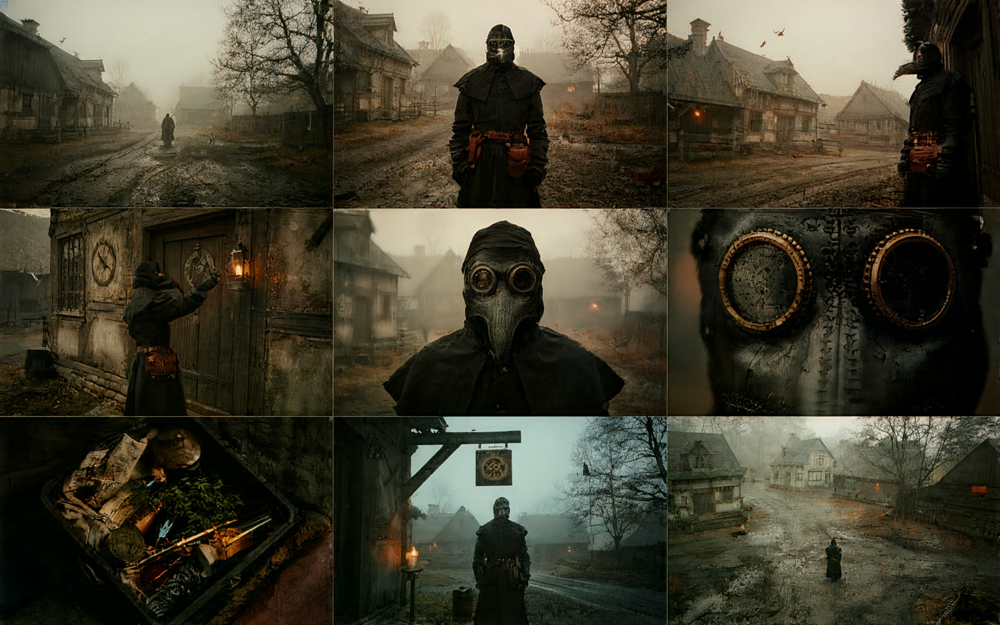
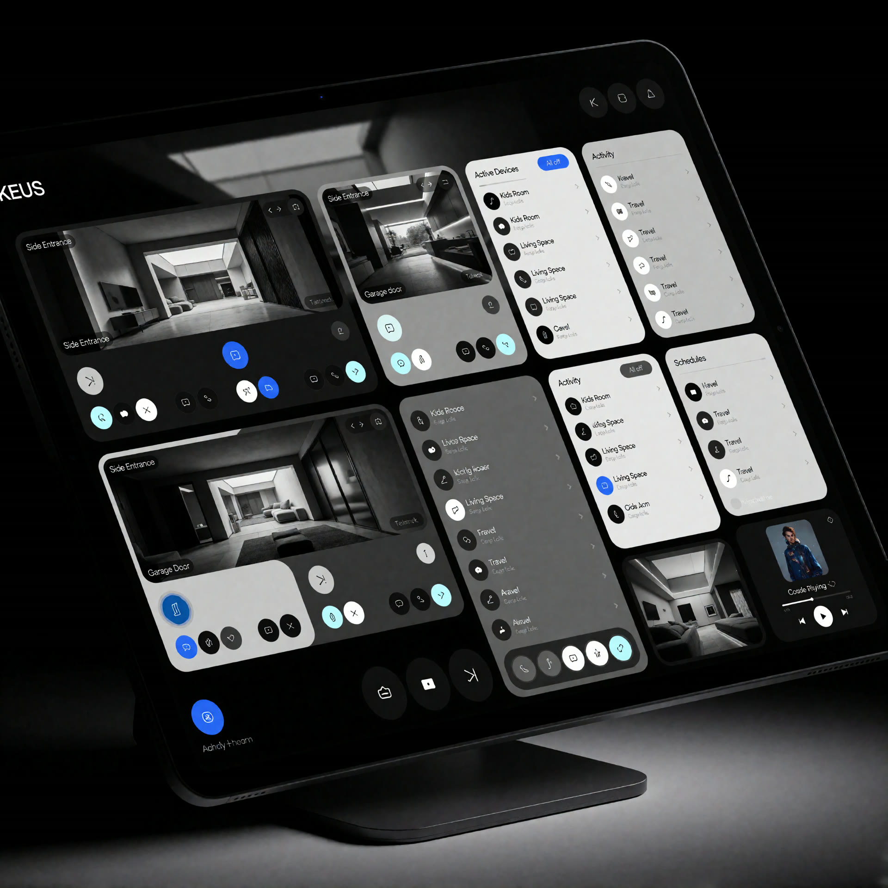

You clicked yes. Twice.
AI is a tool, not the artist.
These are things I made with AI: ComfyUI workflows, LoRAs I trained myself, and image models pushed to see where they break. I don't think AI replaces artists. I treat it like a render engine or a camera: something you learn, control and point at an idea.
🧑🎨 Disclaimer
Everything else on this site was modelled, lit and rendered by hand. This page is the only place where the robot helped. No artists were replaced in the making of these images.

100% AIInterior moods
100% AIimg2img world-building
100% AIUI conceptThe toolsWhat's under the hood
ComfyUI node workflows, custom LoRA training, img2img and SDEdit passes, and whichever new model came out this week. It all runs locally on my own machine.